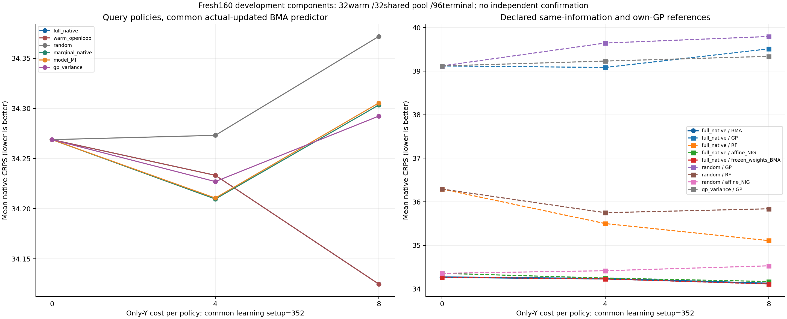
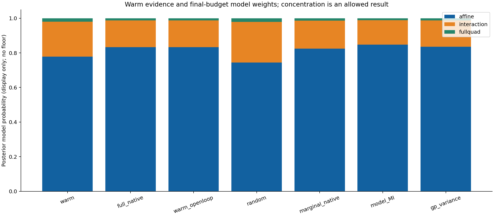

full_native预算8原生CRPS 34.124850，从warm起点变化 -0.144007。候选/最强已列参照比 1.000376，预设2%描述带：True。差值负为候选更好，不据此声称统计显著、正式非劣效或普适泛化。

| 查询策略 | 池索引顺序 |
|---|---|
| full_native | [21, 10, 30, 20, 8, 6, 1, 9] |
| warm_openloop | [21, 10, 30, 20, 8, 1, 6, 9] |
| random | [8, 9, 17, 19, 18, 22, 15, 14] |
| marginal_native | [10, 8, 14, 6, 5, 0, 16, 24] |
| model_MI | [21, 10, 30, 8, 1, 22, 5, 2] |
| gp_variance | [2, 5, 6, 8, 10, 14, 20, 21] |

模型先验等概率，warm权重由实际条件边际证据决定；未用floor、温度或保留熵强行维持不确定性。日志权重始终保留，显示概率可能机器下溢。权重改变是诊断，不能等同识别真实材料机制。frozen_weights_BMA只在同一候选查询链冻结warm预测权重；不是另一个非Bayes选点算法。
| 状态 | 假设 | 概率（显示） | log权重 |
|---|---|---|---|
| warm | affine | 0.778460119 | -0.250437516 |
| warm | interaction | 0.201066571 | -1.60411923 |
| warm | fullquad | 0.0204733099 | -3.8886332 |
| full_native | affine | 0.832527647 | -0.183288848 |
| full_native | interaction | 0.155216991 | -1.8629312 |
| full_native | fullquad | 0.0122553611 | -4.40179179 |
| warm_openloop | affine | 0.832527647 | -0.183288848 |
| warm_openloop | interaction | 0.155216991 | -1.8629312 |
| warm_openloop | fullquad | 0.0122553611 | -4.40179179 |
| random | affine | 0.744416588 | -0.295154471 |
| random | interaction | 0.23464848 | -1.44966672 |
| random | fullquad | 0.0209349325 | -3.8663361 |
| marginal_native | affine | 0.823930778 | -0.193668759 |
| marginal_native | interaction | 0.162277939 | -1.81844474 |
| marginal_native | fullquad | 0.013791283 | -4.28371855 |
| model_MI | affine | 0.847360769 | -0.165628737 |
| model_MI | interaction | 0.141073028 | -1.9584776 |
| model_MI | fullquad | 0.0115662032 | -4.45966795 |
| gp_variance | affine | 0.834880216 | -0.180467018 |
| gp_variance | interaction | 0.152696489 | -1.87930306 |
| gp_variance | fullquad | 0.0124232944 | -4.38818199 |
以下均为同96终端组的预算8候选减参照；SE是单次campaign条件下组间差异的描述量，不覆盖查询campaign变化，不是置信声明。正负结果全部保留。
| 参照 | 平均CRPS差 | 描述SE | 候选更好组 | 更差组 | 精确评分tie |
|---|---|---|---|---|---|
| warm_openloop_BMA | -0.000000 | 0.000000 | 27 | 9 | 60 |
| random_BMA | -0.246879 | 0.435678 | 52 | 44 | 0 |
| marginal_native_BMA | -0.178473 | 0.177357 | 46 | 50 | 0 |
| model_MI_BMA | -0.180511 | 0.303609 | 35 | 61 | 0 |
| gp_variance_BMA | -0.167428 | 0.109170 | 46 | 50 | 0 |
| full_native_GP | -5.386262 | 2.133059 | 58 | 38 | 0 |
| full_native_RF | -0.984023 | 0.993062 | 53 | 43 | 0 |
| full_native_affine_NIG | -0.044096 | 0.027439 | 60 | 36 | 0 |
| full_native_frozen_weights_BMA | 0.012838 | 0.008812 | 35 | 61 | 0 |
| random_GP | -5.669864 | 2.061592 | 58 | 38 | 0 |
| random_RF | -1.713902 | 1.461075 | 56 | 40 | 0 |
| random_affine_NIG | -0.404502 | 0.409880 | 55 | 41 | 0 |
| gp_variance_GP | -5.214346 | 2.108470 | 58 | 38 | 0 |
六策略统一用真Y更新后的BMA预测；full_native/random各用同一真训练集比较affine_NIG、固定GP和RF。GP方差策略保留自己的GP预测。候选再与同component状态、固定warm模型权重预测比较。18次sklearn拟合=13GP+5RF；3warmNIG初始化、96warm响应使用及144反馈分量更新不算额外材料。90%覆盖与宽度独立列出，CRPS接近强参照不等于校准已成立。native单位沿发布bulk字段GPa归属，仍受来源聚合语义限制。
| 策略 | 预测器 | 新Y成本 | 原生CRPS | 中位数RMSE | 90%覆盖 | 90%宽度 |
|---|---|---|---|---|---|---|
| full_native | BMA | 0 | 34.268857 | 63.633555 | 86/96 (89.6%) | 174.643217 |
| full_native | BMA | 4 | 34.233275 | 63.816817 | 87/96 (90.6%) | 172.723038 |
| full_native | BMA | 8 | 34.124850 | 63.180391 | 87/96 (90.6%) | 176.433877 |
| warm_openloop | BMA | 0 | 34.268857 | 63.633555 | 86/96 (89.6%) | 174.643217 |
| warm_openloop | BMA | 4 | 34.233275 | 63.816817 | 87/96 (90.6%) | 172.723038 |
| warm_openloop | BMA | 8 | 34.124850 | 63.180391 | 87/96 (90.6%) | 176.433877 |
| random | BMA | 0 | 34.268857 | 63.633555 | 86/96 (89.6%) | 174.643217 |
| random | BMA | 4 | 34.273141 | 63.401511 | 88/96 (91.7%) | 184.026317 |
| random | BMA | 8 | 34.371729 | 63.199864 | 87/96 (90.6%) | 178.940740 |
| marginal_native | BMA | 0 | 34.268857 | 63.633555 | 86/96 (89.6%) | 174.643217 |
| marginal_native | BMA | 4 | 34.209608 | 63.118083 | 87/96 (90.6%) | 170.955848 |
| marginal_native | BMA | 8 | 34.303324 | 62.864628 | 86/96 (89.6%) | 166.797792 |
| model_MI | BMA | 0 | 34.268857 | 63.633555 | 86/96 (89.6%) | 174.643217 |
| model_MI | BMA | 4 | 34.210593 | 63.814494 | 87/96 (90.6%) | 172.667347 |
| model_MI | BMA | 8 | 34.305361 | 63.806582 | 87/96 (90.6%) | 165.533989 |
| gp_variance | BMA | 0 | 34.268857 | 63.633555 | 86/96 (89.6%) | 174.643217 |
| gp_variance | BMA | 4 | 34.227017 | 63.318340 | 86/96 (89.6%) | 167.790734 |
| gp_variance | BMA | 8 | 34.292278 | 63.053532 | 85/96 (88.5%) | 164.103525 |
| full_native | GP | 0 | 39.119124 | 67.312067 | 74/96 (77.1%) | 163.813041 |
| full_native | GP | 4 | 39.084190 | 67.353309 | 74/96 (77.1%) | 170.256725 |
| full_native | GP | 8 | 39.511113 | 67.461762 | 74/96 (77.1%) | 163.572298 |
| full_native | RF | 0 | 36.292038 | 68.786085 | 79/96 (82.3%) | 163.635292 |
| full_native | RF | 4 | 35.499209 | 66.086188 | 80/96 (83.3%) | 175.060146 |
| full_native | RF | 8 | 35.108873 | 63.181641 | 80/96 (83.3%) | 174.171375 |
| full_native | affine_NIG | 0 | 34.356962 | 63.789192 | 85/96 (88.5%) | 174.218856 |
| full_native | affine_NIG | 4 | 34.248168 | 63.842555 | 87/96 (90.6%) | 172.482129 |
| full_native | affine_NIG | 8 | 34.168947 | 63.251451 | 87/96 (90.6%) | 176.229284 |
| full_native | frozen_weights_BMA | 0 | 34.268857 | 63.633555 | 86/96 (89.6%) | 174.643217 |
| full_native | frozen_weights_BMA | 4 | 34.227816 | 63.806640 | 87/96 (90.6%) | 172.836550 |
| full_native | frozen_weights_BMA | 8 | 34.112012 | 63.158713 | 87/96 (90.6%) | 176.513507 |
| random | GP | 0 | 39.119124 | 67.312067 | 74/96 (77.1%) | 163.813041 |
| random | GP | 4 | 39.644514 | 68.216678 | 75/96 (78.1%) | 163.683043 |
| random | GP | 8 | 39.794715 | 68.153224 | 75/96 (78.1%) | 163.727738 |
| random | RF | 0 | 36.292038 | 68.786085 | 79/96 (82.3%) | 163.635292 |
| random | RF | 4 | 35.749179 | 67.061401 | 78/96 (81.2%) | 163.710583 |
| random | RF | 8 | 35.838752 | 66.766338 | 78/96 (81.2%) | 161.613323 |
| random | affine_NIG | 0 | 34.356962 | 63.789192 | 85/96 (88.5%) | 174.218856 |
| random | affine_NIG | 4 | 34.416836 | 63.651387 | 87/96 (90.6%) | 183.636100 |
| random | affine_NIG | 8 | 34.529352 | 63.456964 | 86/96 (89.6%) | 178.519413 |
| gp_variance | GP | 0 | 39.119124 | 67.312067 | 74/96 (77.1%) | 163.813041 |
| gp_variance | GP | 4 | 39.230884 | 67.172814 | 74/96 (77.1%) | 159.043098 |
| gp_variance | GP | 8 | 39.339197 | 67.212587 | 74/96 (77.1%) | 164.559396 |
关联形式候选只有affine、interaction、fullquad。每次先用旧predictive density更新模型权重，再用同一真实Y更新全部NIG分量。完整跨目标VOI保留共享H及H内条件依赖，按原生单位proper score评价。对照包括标签盲开放环、随机、逐点原生CRPS不确定性、经典模型辨识MI和GP方差；开放环的一步lookahead仍从合法joint做Bayes条件化。
实际注册协议 · 源与数学证据冻结 · 源前IO对接 · 独立评分审计 · 冻结预测 · 实际结果
完整摘要CSV · 全部权重与log权重 · 聚合结果与SHA · 文件清单
只读聚合/绘图，没有重新计算nativeCDF评分、拟合、query或bootstrap。报告UTC 2026-11-06T09:08:56.863343+00:00；RESULTS SHA 901a6b91e9d28ef969c4f82a3fc5fbf01854fefb63a102e79d6952f822e1192b。